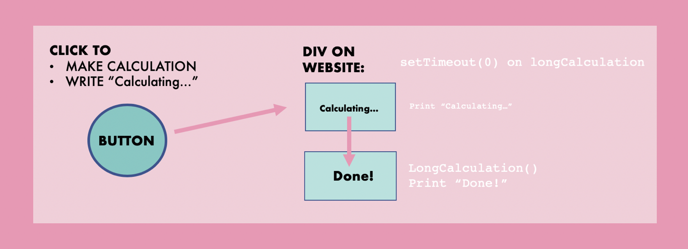
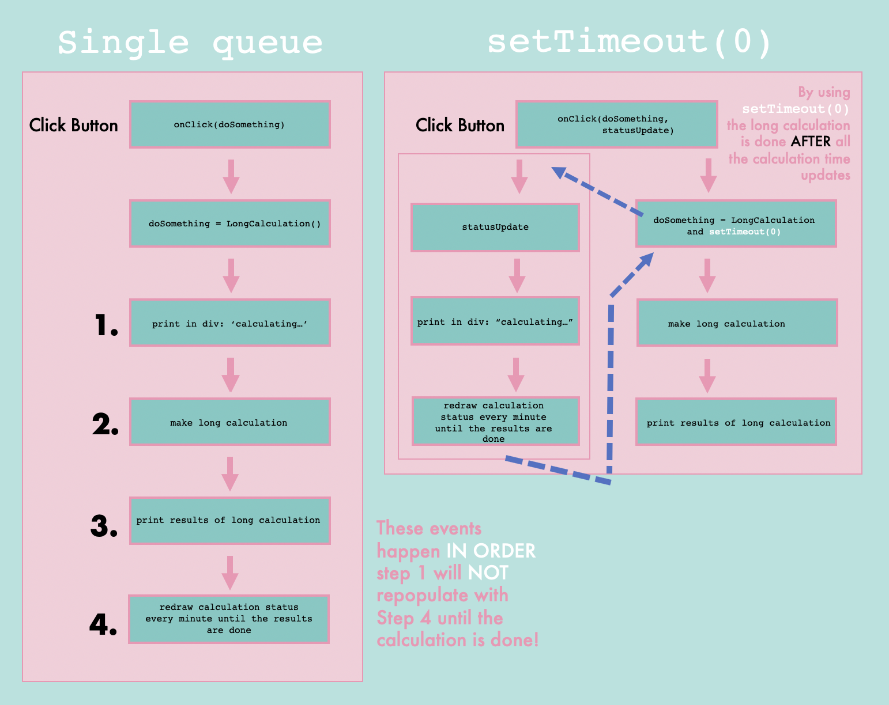

|
Not Calculating yet.
|
|
|
Not Calculating yet.
|
Along with the hands-on skills I’ve been learning during my internship with RStudio, I’ve also been bolstering my theoretical understandings of programming concepts. This brought me to a common trick setTimeout(0), which defers the execution of a function, giving something else a chance to run.
This concept was described using a concrete example in a StackOverflow post that I wanted to explore in more detail (both visually and without using JQuery):

You want to create a button on your website with two tasks (1) perform a long calculation (2) and to print “Calculating…” in a div until “Done!” can be printed.
CREATE LONG FUNCTION
Create a function that takes a “long time” to run. When the function is done, it prints “Done!” to the div
function long_running(statusId) {
var result = 0;
for (var i = 0; i < 1000; i++) {
for (var j = 0; j < 700; j++) {
for (var k = 0; k < 300; k++) {
result = result + i + j + k;
}
}
}
status_update(statusId, `Done!`);
}CREATE STATUS UPDATE FUNCTION
function status_update(statusId, message) {
document.getElementById(statusId).innerHTML = message;
}PUT IT ALL TOGETHER
Update the div by using an Event Listener. When clicking the button run our long calculation and the status update.
document.getElementById("do").addEventListener("click", function() {
long_running("status");
status_update("status", "calculating...");
});FAIL
Without using setTimeout(0) the queue of tasks that the button fires off are done serially: the long calculation “locks” the thread; the text is quickly set to “Done!” but the status_update function overwrites it with calculating...

Using setTimeout(0) is a nifty trick to defer the actual long calculations until status_update has been executed. By setting a timeout if 0, you are queuing asynchronous code until the engine executes the current call stack.
document.getElementById("do_ok").addEventListener("click", function() {
setTimeout(function() {
long_running("status_ok");
}, 0);
status_update("status_ok", "calculating....");
});In the code chunk above the button text “Not calculating yet” will change to “Calculating….” and THEN “Done!”
CONCLUSION
JavaScript runtimes contain a message queue to store the list of messages to be processed (here “calculating…”). Because JavaScript is non-blocking, the messages can be queued in response to events (here: the long calculation). Using a simple event loop within our button, JavaScript enables the collection of asynchronous callbacks freeing the runtime to handle concurrent operations.